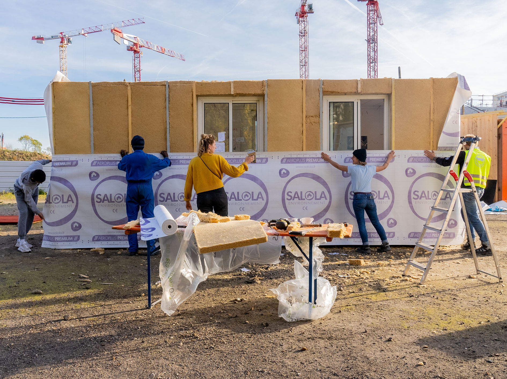
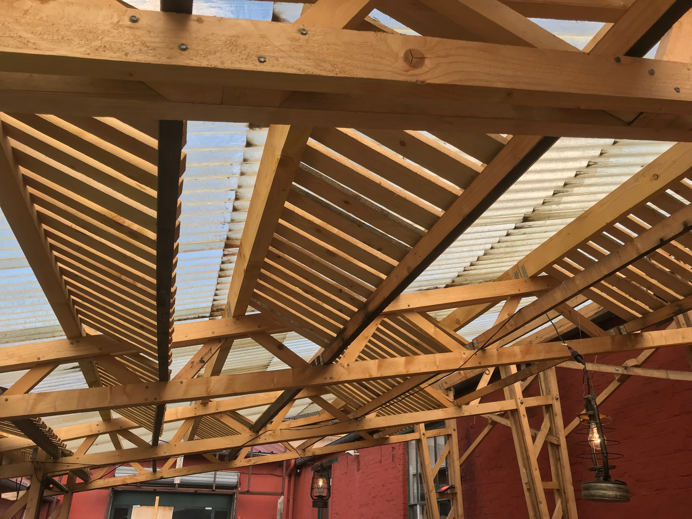
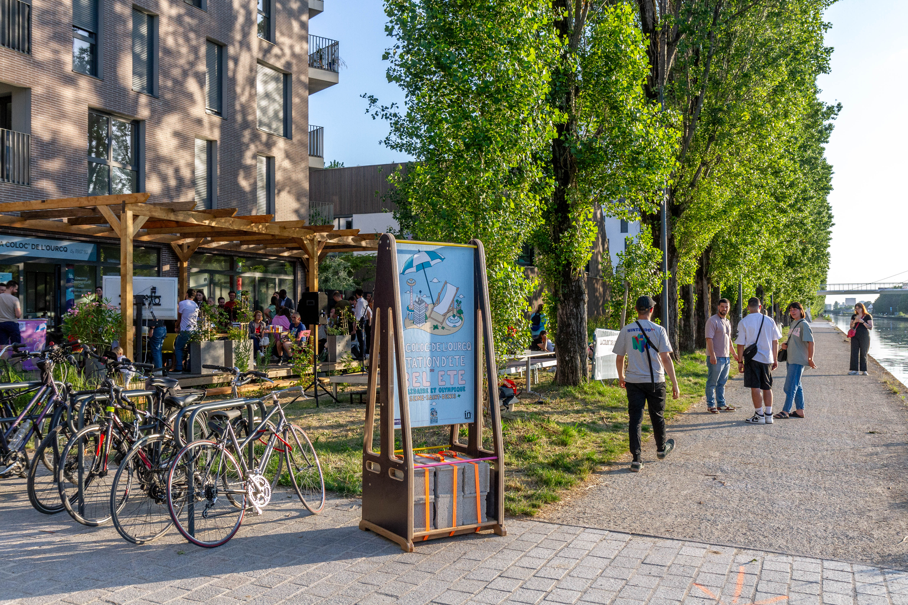
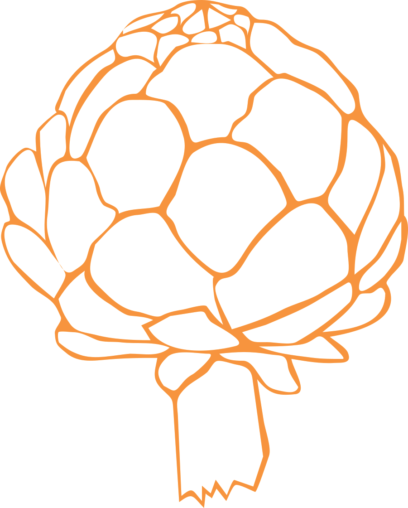
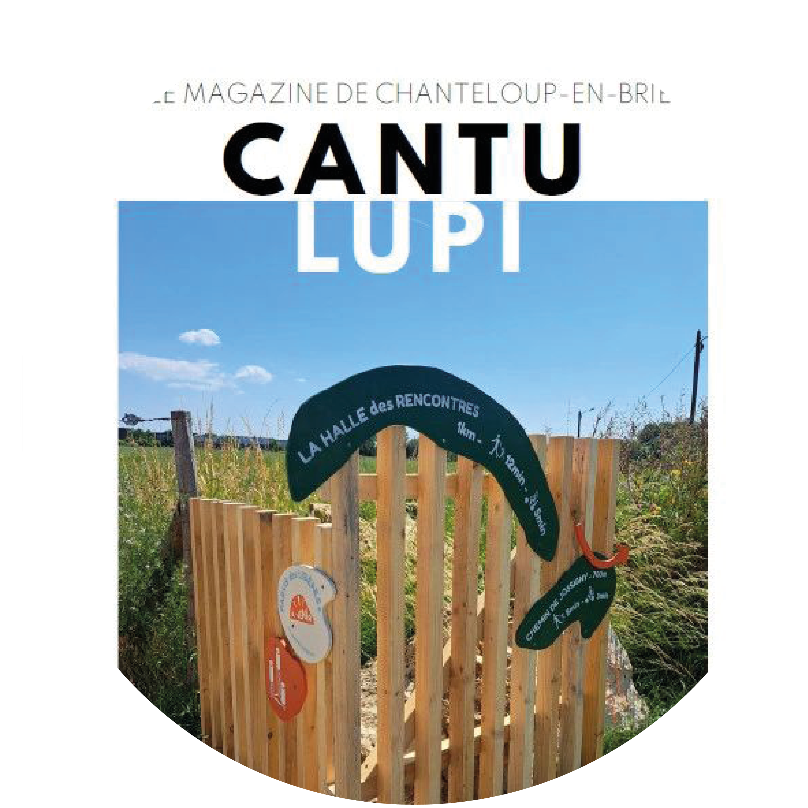
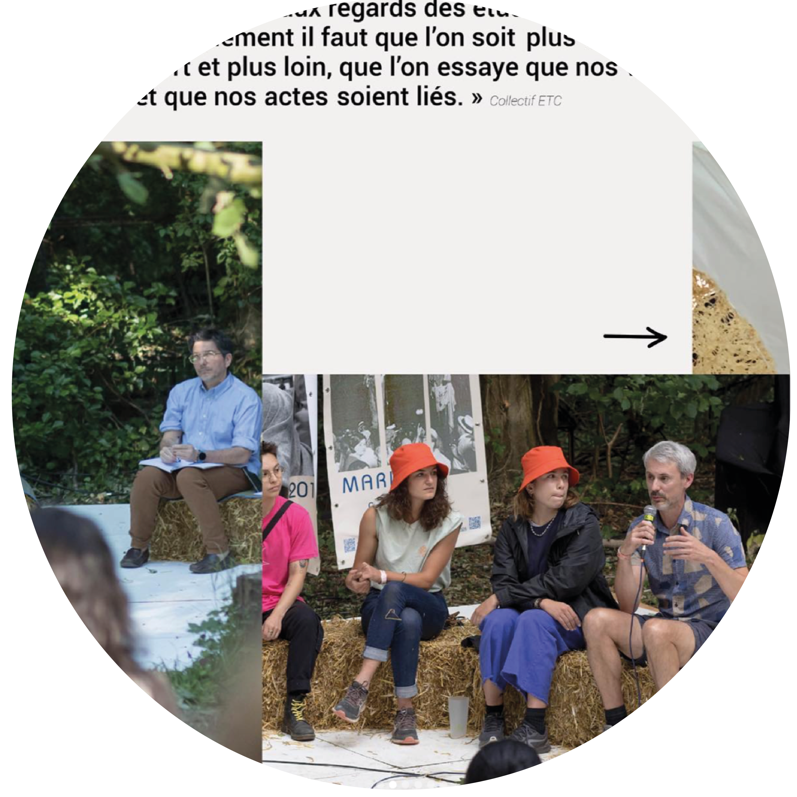

Aménagement d’espaces
Chantiers pédagogiques et ateliers de sensibilisation
Démarches expérimentales
Ligne de mobilier
projet sur mesure
animation atelier
ligne de mobiliers uniques
À travers la réalisation de projets d’aménagement d’espace, d’artisanat, de graphisme, de scénographie et de paysagisme, les membres du collectif conjuguent savoir-faire manuels, techniques et artistiques dans une démarche écologique, éthique et alternative.
La pratique collaborative du collectif ARTI/CHÔ s’articule en 3 axes

Cette démarche est portée par le désir de travailler sur des manières alternatives d’habiter, de penser, d’organiser le territoire et les espaces communs.
Le travail à plusieurs échelles permet au collectif d’osciller entre une vie d’atelier et une vie du dehors avec des chantiers réalisés directement sur site.

in Seine Saint-Denis

HORIZONS

Cantu Lupi

in Seine Saint-Denis

le Parisien

Bellastock
Thomas Oblomo / Noir Pétrole / Jérome De Vienne / La Grande Ourcq / Le Martiennerie / Le Sprinkler / Super 9 / Atelier R-are / Variable / Les Fermants / Terramano
Engrainage / Julien Beller Architecte / Capsule Collectif / Collectif W.O.R.K ? / Nathan Levinson
Les Gens Géniaux / Lokal / Parenthèse / LAO Scop / Atelier TAC / Bellastock / Atelier Gru / Vincent Croguennec
La Sauge / Théâtre Public de Montreuil / les Tranquilles / Croque Ta Ville / PPCM / la Preuve par 7 / le Lycée Avant le Lycée / Fort Avenir / les Poussières / la Fabrique des Impossible / Shakti 21 / E-Graine / l’Odycée / Peas&Love / les Poussières / Permapolis / Culticime / Lycée de Cachan / la Ruche qui dit Oui / Nexity / Office Municipal d’Animation de la Cité de Torcy
La Ligue de l’enseignement / le 6B / réseau Superville / URSCOP / La Braderie de l’Art / Pot Kommon
Association d’habitants Confluences de Saint-Denis / Mission Locale Saint-Denis / Pierrefitte / Maison des Solidarités à Saint-Denis / La Réserve des Arts / DSAA Alternatives urbaines de Vitry-sur-Seine / DNMADE design d’espace de Vitry-sur-Seine
Mairie de Noisy-le-Sec / Mairie de Romainville / Plaine Commune / la Cité Maraîchère / mairie de Vitry-sur-Seine / la Maison Montreau / Mairie d’Epinay-sur-Seine / les Parlottes